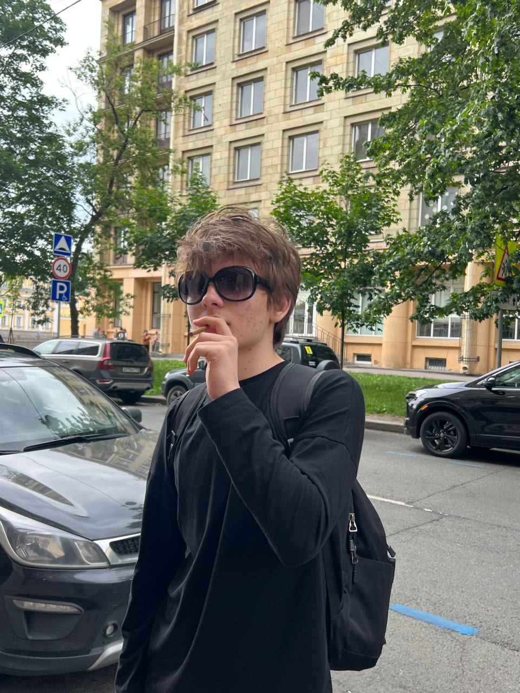

Стрельцов Артур Алексеевич
Участник
Дата рождения
18 февраля 2010 года
Братья, сёстры
Стрельцова Мария Алексеевна
Биография
Родился в Саранске. В 2020 году вместе со своей старшей сестрой переехал в Москву, где остался учиться и жить до сих пор.